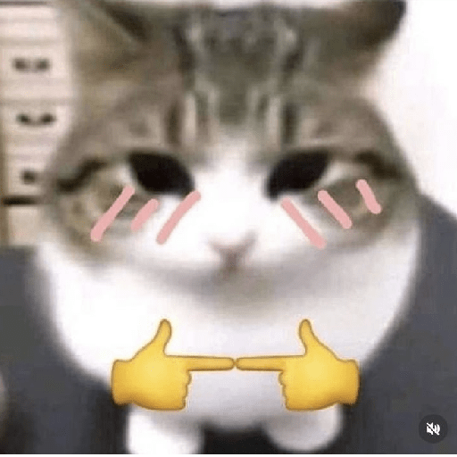
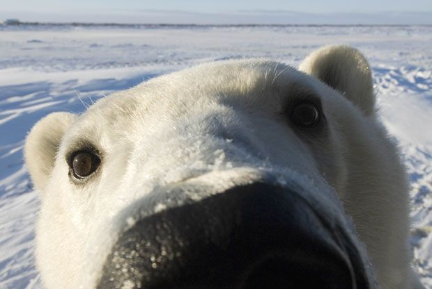
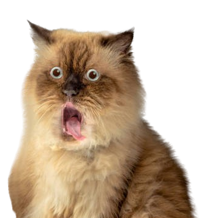
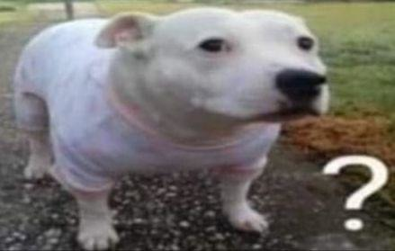
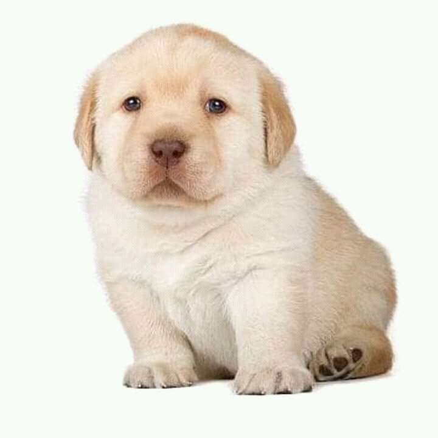
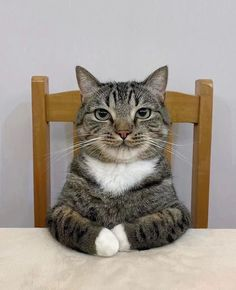

¡Hola vv! ¿Qué tal?
Bienvenidx a este espacio donde las ideas nunca terminan, las palabras siempre encuentran camino y la
imaginación vuela sin límites. Aquí convergen pensamientos, arte, cultura, opiniones y emociones de
quienes
buscan expresarse de forma libre y auténtica. No importa de dónde vengas ni cómo pienses; este portal
nace
para conectar universos distintos desde lo colectivo, creativo y humano.
Este lugar es para quienes cuestionan, crean, sienten y transforman todo lo que pasa por su mente en
algo
que merece ser compartido. Aquí no existen etiquetas ni fronteras, solo voces que se unen para inspirar,
dialogar y construir comunidad. Porque cuando las juventudes se encuentran, las ideas dejan de ser
individuales y se convierten en algo mucho más grande.
¡Con todo, si no pa’ qué!


TOP TOP TOP TOP

